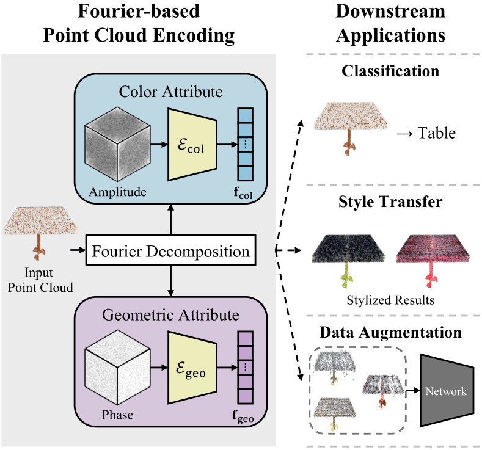
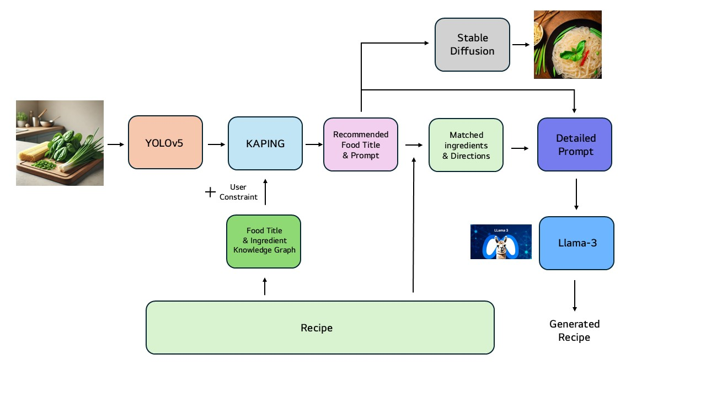
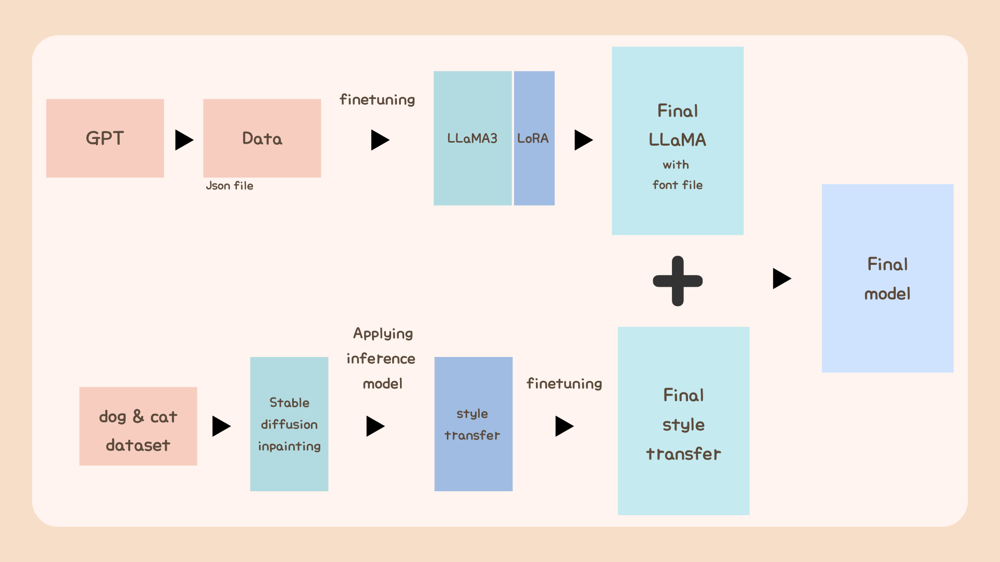
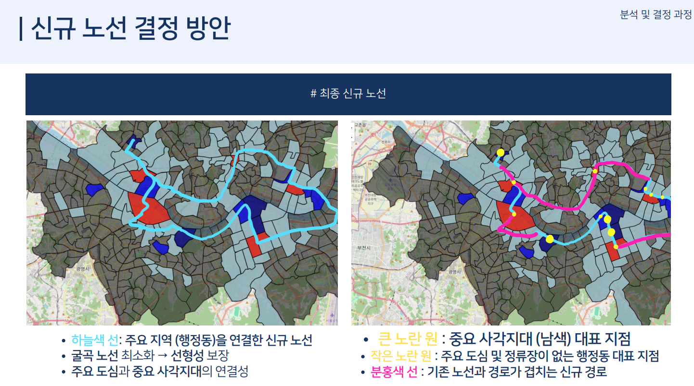

I'm an undergraduate student at Yonsei University, majoring in both Civil and Environmental Engineering and Computer Science.
I am currently working as an undergraduate researcher at CVLAB, KAIST AI, advised by Prof. Seungryong Kim.
My research goal is to develop advanced frameworks for 3D scene understanding and generation that enable (1) physically plausible 3D dynamic synthesis, (2) high-quality neural rendering with accurate material modeling, and (3) seamless integration with generative AI models. Particularly, my interests include:
Physics-based 3D dynamic scene synthesis
Diffusion models for 3D content generation
Neural rendering and 3D Gaussian Splatting
Publications

Fourier Decomposition for Explicit Representation of 3D Point Cloud Attributes
Donghyun Kim, Hyunah Ko, Chanyoung Kim, Seong Jae Hwang
Under Review arXiv
Proposing a novel method for explicit representation of 3D point cloud attributes using Fourier decomposition.
Improving model adaptation performance through backbone augmented training techniques.
Selected Projects
Highlighted course and personal projects demonstrating my experience in generative AI, computer vision, and data-driven applications.
See CV for complete project list.
Research Project
Developed a novel view synthesis system combining CameraCtrl and 3D Gaussian Splatting to generate
controllable 3D objects from single images with temporal consistency. Our approach addresses the challenge of preserving
fine-grained facial details in human-centric 3D content generation by integrating multi-view
diffusion models with specialized 3DGS representation.

Recipe Recommendation via Object Detection and Knowledge Graph QA Oct. 2024 – Nov. 2024 | Team Leader code /
demo
Course Project: Introduction to AI and Its Application
Built an end-to-end recipe recommendation system that detects ingredients from images using YOLOv5,
generates personalized recipes with knowledge-augmented LLM prompts, and creates visually appealing
food images using Stable Diffusion. Implemented a user-friendly interface allowing real-time ingredient
detection and customized recipe generation based on dietary preferences and available ingredients.

Generative Pet Memorials with LLaMA3 and Stable Diffusion Aug. 2024 – Sep. 2024 code
Personal Project
Created a personalized pet memorial system that generates heartfelt letters and artistic images
commemorating beloved pets. Fine-tuned LLaMA3 using LoRA for emotionally resonant letter generation,
and integrated Stable Diffusion with ControlNet for style-consistent memorial artwork. Applied style
transfer techniques to match various artistic preferences, providing comfort to pet owners through
AI-generated personalized tributes.

Seoul Night Bus Route Analysis and Design Jul. 2024 – Aug. 2024 | Team Leader report
Course Project: Data Science
Analyzed Seoul's public transportation and mobility patterns to identify underserved regions during
late-night hours. Performed comprehensive exploratory data analysis on ridership data and applied
regression modeling to predict transportation demand patterns. Proposed data-driven night bus route
designs to improve accessibility for underserved communities, supported by statistical analysis and
geospatial visualization. The project demonstrates practical application of data science to address
real urban transportation challenges.
Miscellanea
Research Experience
CVLAB, KAIST AI (Jul. 2025 - Present) Undergraduate Researcher, advised by Prof. Seungryong Kim
Medical Imaging and Computer Vision Lab, Yonsei Univ. (Jul. 2024 - Jul. 2025) Undergraduate Researcher, advised by Prof. Seong Jae Hwang
Environmental Biotechnology & Thermal Lab, Yonsei Univ. (Jul. 2023 - Sep. 2023) Undergraduate Researcher, advised by Prof. Joonhong Park
Honors & Awards
🏆 Grand Prize, 2024 Jeju Satellite Data Utilization Competition (Jul. 2024 – Aug. 2024) Proposed a data-driven solution to address regional issues in Jeju Island by analyzing satellite imagery.
🎖️ 77th out of 514, AirQo African Air Quality Prediction Challenge, Zindi (Mar. 2024 – Jun. 2024) Developed a model to estimate air pollution levels using satellite imagery.